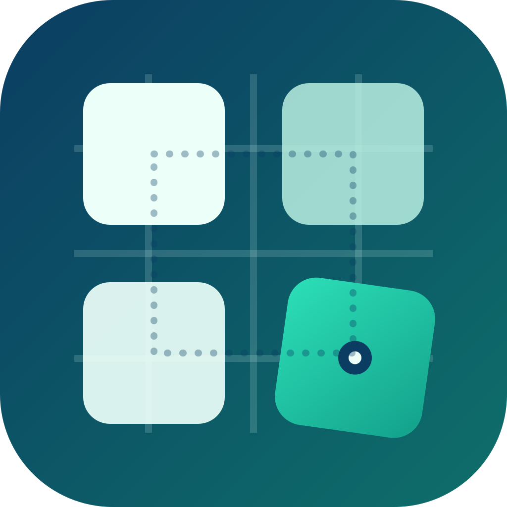
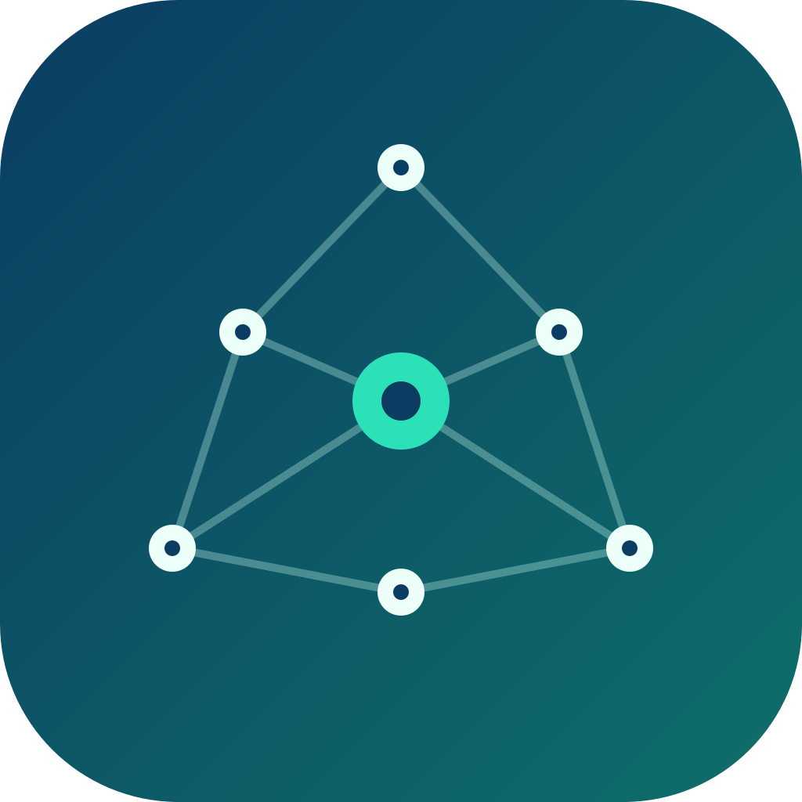
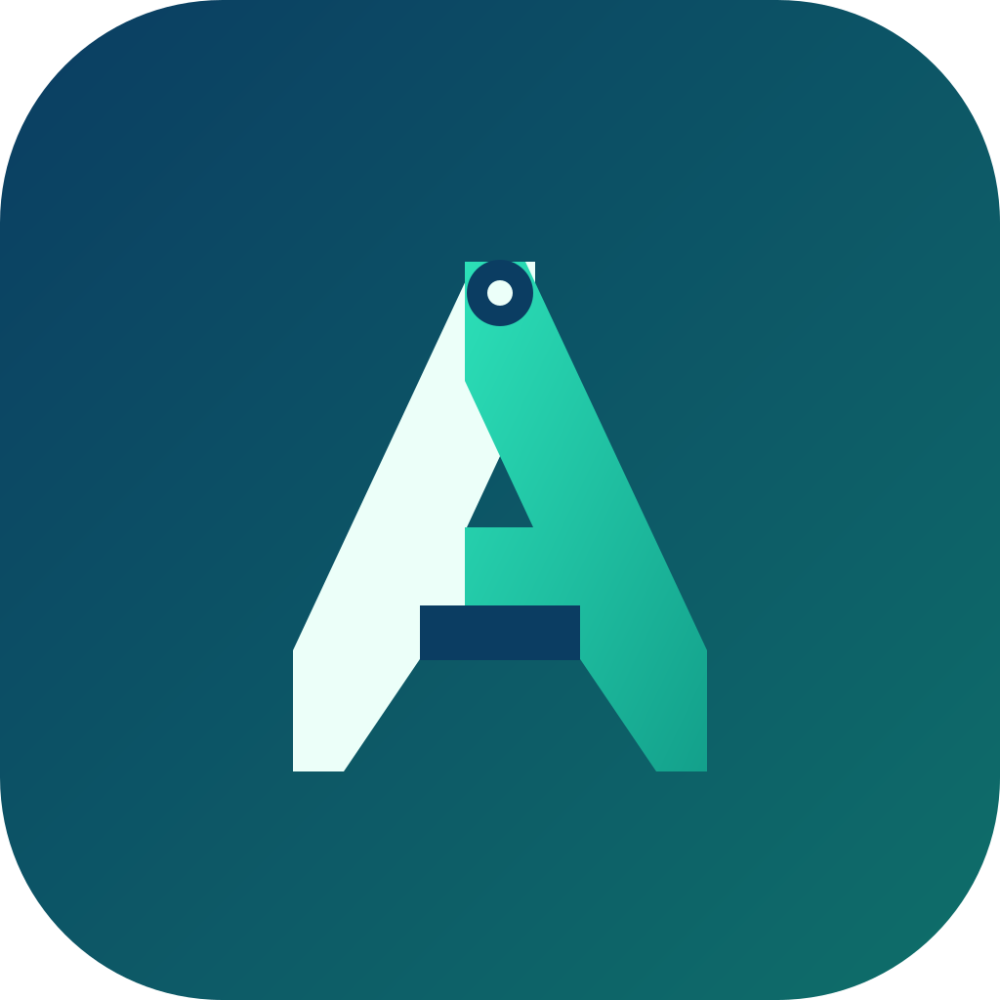

同一套颜色与字标下比较：哪个方向既有“环境图谱”的含义，又不容易撞车？
四块地图瓦片，一块被“折”出来并高亮；用路径把它们连成一个环境。

含义：地图、环境、项目边界；“折出来的一块”像当前 agent/项目。
优点：可扩展成网格图案、容易做动效；黑白可用。
风险：四宫格容易联想到通用产品/窗口，需要靠折角与路径拉开差异。
六个环境节点 + 一个高亮中心，连线像一次扫描路径，强调“agent / skill / project 的关系”。

含义：环境、连接、扫描；高亮中心像“当前项目/当前 agent”。
优点：独特性较好；不像罗盘/星芒；可以做成节点逐个亮起的动效。
风险：节点/星座是 AI 领域常见语言；小尺寸要靠高对比维持可读性。
三条“地图折带”组成一个 A，缺口与折角就是 atlas 的折页感；高亮一侧代表当前路径。

含义：Atlas 的 A + 折页地图；最直接品牌首字母。
优点：小尺寸最稳；和字标关系强；黑白/单色最容易成立。
风险：字母 A 类 logo 很多；需要靠“折带/缺口”的细节做出专属性。